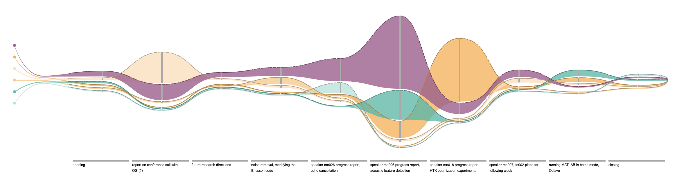
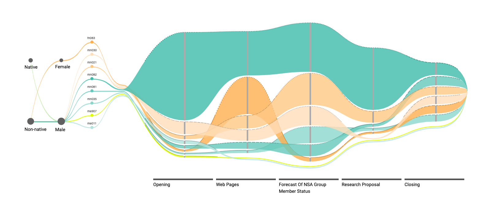
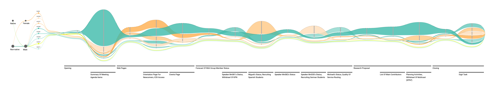
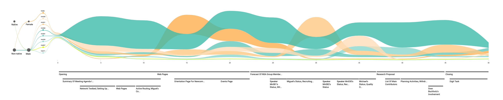

Discussion Flows
An Interactive Visualization for Analyzing Engagement in Multi-Party Meetings
Engagement in multi-party meetings is a key indicator of outcome. Poor attendee involvement can hinder progress and hurt team cohesion. With a better understanding of what happens in meetings, organizations could address potential issues and improve the overall experience. Thanks to the popularity of online meeting systems, whose usage has become widespread due to the COVID-19 pandemic, recording meetings is as easy as clicking on a button. However, unpacking interactions and surfacing insights remain a challenge.
Conversation is inherently a social process. The words exchanged in a discussion are only part of the story. Standard audio or video players offer little beyond basic replay controls. The advancement of AI technologies, such as Natural Language Processing, can help transcribe and summarize the textual content, but they are less effective in recognizing the intricate social undertone embedded in meetings. In multi-party discussions, which are common in meetings, the group dynamic may easily change to respond to different attendee composition and behaviors. In order to fully understand the engagement in a meeting, it is necessary for users to utilize tools that bring their attention to social cues that might be easy to miss, such as awkward silence or turn-taking behaviors.
The words exchanged in a discussion are only part of the story.
This motivated us to design Discussion Flows, a multi-level interactive visualization tool, that could help analyze engagement in multi-party meetings. We followed a user-centered process to gather requirements from target users and inform the design. To demonstrate the solution, we created an interactive protype using the open-source ICSI’s Meeting Recorder Dialog Act (MRDA) Corpus. We are in the process of planning user studies to perform a robust, comprehensive evaluation of the system. We hope the feedback would help us refine the design and pave the way for Discussion Flows to be used in every meeting room.
You will find more information on how to use Discussion Flows below. You can also try the interactive Discussion Flows prototype at any time.
The Dataset
We demonstrate our prototype using ICSI’s Meeting Recorder Dialog Act (MRDA) Corpus. It was collected at the International Computer Science Institute in Berkeley in early 2000’s. It consists of 75 work meetings on several projects. Most run just under an hour and involve at least six speakers. The dataset is released with rich annotations, including word-level orthographic transcriptions, topic assignments, and detailed speaker information.
Requirments and Design
We started with a user-centered design process to ensure that our design goals were grounded on realistic use cases. We conducted ten semi-structured interviews with participants recruited from our industry partner SAP, a large enterprise software company. The participants are from a wide range of roles and they attend group meetings frequently. Interviews lasted between 15 to 30 minutes. The participants were asked to discuss around two probing questions: (1) what would they want to know if they miss a team meeting? (2) what would they want to share about a meeting if asked by someone else who has missed it? We learned that:
- The inquiry is driven by agenda: participants are interested to discussions related to their responsibilities, such as the project they work on. However, the definition of relevance is broad. Seemingly irrelevant projects might be useful if they share similar work items. Their experience with one meeting is often influenced by past meetings from the same serial.
- Context is important when interpreting decisions: participants want to know how a decision was reached, such as who proposed the solution or how much deliberation happened; then they assess the quality of the decision accordingly.
- Long-term engagement patterns are informative for managing a group: participants with managing responsibilities also emphasized the importance of being able to understand the participation of all group members across multiple meetings.
The interviews helped us identify users with managing roles, e.g., team managers, technical leads, as the target users, because their responsibilities require them to pay attention to engagement from both a productivity and a team building aspects. Along with the need of maintaining the agenda and context, two critical elements emerged from the interviews, we defined the following tasks:
- T1: Users should be able to compare and contrast participant engagement in multiple meetings based on their desired criteria.
- T2: Users should be able to analyze meeting structures and speaking behavior in detail, such as the turn-take patterns, presentation formats, or interruptions.
- T3: The transition between levels should be logical and intuitive.
Discussion Flows: Overview level
At the top level, Discussion Flows provides an overview of all meetings. Users can choose either a week view where meetings are sorted into different columns representing days of a week or a time view where meetings from the same week are sorted into rows representing time slots. Time slots without meetings are minimized to save interface estate.


We chose a glyph-based approach, which represents each meeting as a small independent visual element. A main strength of glyphs is that they allow the identification of patterns involving several dimensions and they can be placed in different layout strategies. Each glyph contains several color-coded stacked bars. Each bar represents an item in the meeting agenda and they are placed in the same order as they were discussed in the meeting from left to right. Each colored segment in these stacked bars represent one speaker and the height corresponds to the duration of that person’s involvement in the agenda.
The colors used in the glyphs denote additional attributes about speakers. The left side of the interface provides various filters that help analyze meetings based on the speakers’ role, gender, or native language. Each category employs a different color theme. When selected, all glyphs would be updated to the corresponding colors to contrast the differences among options within this category. The speaker role is the default color theme. If a single option within a category is selected as filter, we highlight the contributions from applicable participants by greying out other’s contributions. Users can go further to select a single individual to compare this person’s contributions in different meetings. In addition, we offer a "Search in Topics" feature to help locate all topics containing the keyword.
Flow Diagrams
To assist further analysis of a particular meeting, Discussion Flows offers three more levels of details that can be accessed by selecting the target of interest or zooming. They provide more information about a meeting by visualizing how participants with different roles and attributes behave at different parts of the meeting agenda. We adopted flow diagrams to convey a participant’s engagement from one agenda to another.
Flow diagrams allow using more visual attributes to convey additional engagement information. The current prototype conveys interruptions. We designed three types of lines to a flow’s top edge to indicate how often a speaker is interrupted over an agenda. We approximate the level of interruption based on the number of utterances. A solid line means no or little interruptions, a dashed line means some interruptions, and a dotted line means many interruptions.
We also introduced different shades of color in this view. The flow diagram inherits the same color theme from the overview page so that users can maintain a consistent visual impression of the engagement depicted, especially necessary if they follow through from filtered results. For multiple participants with the same role, we take the role color as the base color and produce different shades according to other distinguishing attributes. In the current implementation, we use speaker age for this calculation.
Discussion Flows: Topic levels
At the topic level, the vertical axis depicts the duration of time spent on one agenda and the horizontal axis represents the order in which the agendas were discussed. To help trace a speaker, the flows of speakers who do not contribute to an agenda are still drawn, but passing below the agenda bar. Agenda descriptions were printed under the corresponding bars. A small Parallel Coordinate, shown on the left side of the flows, is designed to augment participants with additional attributes. They also serve as filter controls. Users can select an attribute to highlight the corresponding flows.
It is common that a top level agenda has multiple sub items. Therefore, we designated level 2 to show only top level agenda. When users wish to learn more of a discussion, they can zoom in to reveal the current agenda’s sub items.
Discussion Flows: Word level
Users can also navigate to the word level, which summarizes participant contributions during a customizable time interval instead of agendas. With a smaller interval users can observe closeup interactions, such as overlapping of agenda sub items. Filter and highlight features work the same as previous levels.
